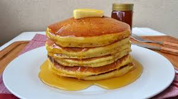

How to make american pancakes!

Description of recipe
This recipe will give you the thick yet fluffy pancakes that you
have been looking for. All you will need is two bowls a whisk, pan,
either microwave proof bow or pan (to melt butter) and a hard working
wrist.
Ingredients
- 600 grams of flour
- 3 TBSP of sugar
- 2 TSP of salt
- 1 TSP of baking powder
- 1 TSP of baking soda
- 600 ml of butter milk (if you only have normal milk add 2-3
TBSP of lemon juice or viniger and let it rest for 10 minutes)
- 110 grams of butter (melt this before use)
- 2 eggs